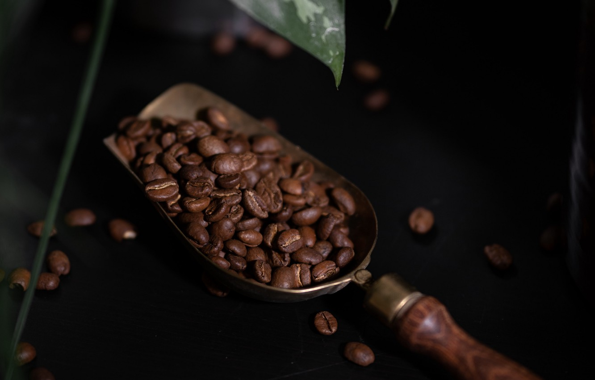
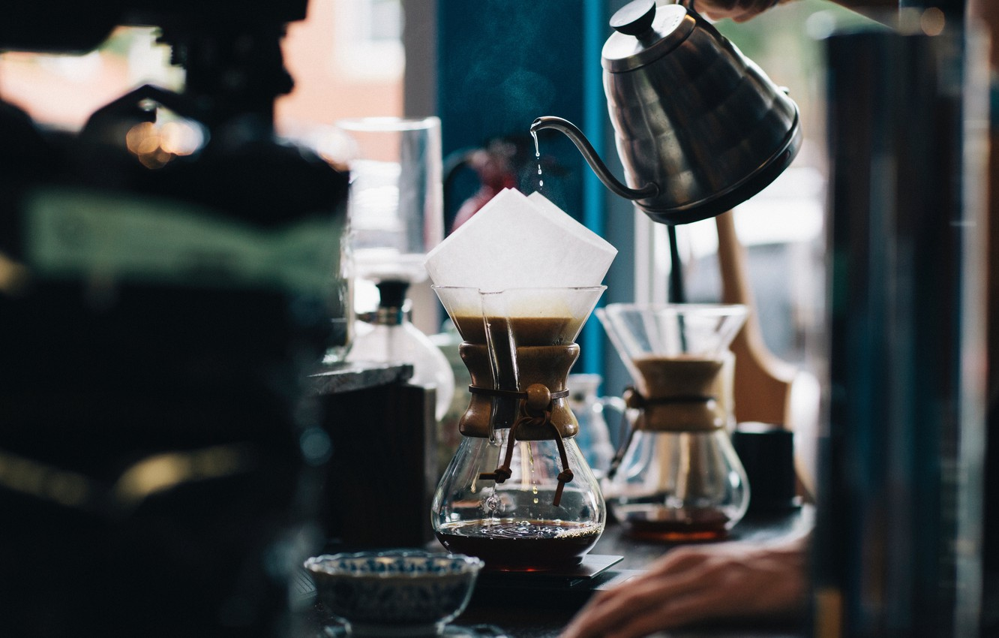

Coffee is a popular brewed drink prepared from roasted coffee beans. Coffee plants are cultivated in over 70 countries, primarily in the equatorial regions of the Americas, Southeast Asia, India and Africa. Once ripe, coffee beans are
picked, processed, and dried.
Green (unroasted) coffee beans are one of the most traded agricultural commodities in the world. Once traded, the beans are roasted to varying degrees, depending on the desired flavor, before being ground and brewed to create coffee.
The two most commonly grown coffee beans are the highly regarded arabica, and the less sophisticated but stronger and more hardy robusta.
Coffee is one of the most popular drinks in the world. It is slightly acidic and can have a stimulating effect on humans because of its caffeine content. It can be prepared and presented in a variety of ways. The effect of coffee on human health has been a subject of many studies; however, results have varied in terms of coffee's relative benefit. The majority of recent research suggests that moderate coffee consumption is benign or mildly beneficial in healthy adults.
|
Coffee cultivation first took place in Southern Arabia. The earliest credible evidence of coffee-drinking appears in the middle of the 15th century in the Sufi shrines of Yemen. In the Horn of Africa and Yemen, coffee was used in local religious ceremonies. As these ceremonies conflicted with the beliefs of the Christian church, the Ethiopian Church banned the secular consumption of coffee until the reign of Emperor Menelik II. The beverage was also banned in Ottoman Turkey during the 17th century for political reasons, and was associated with rebellious political activities in Europe.
Coffee is a major export commodity: it was the top agricultural export for twelve countries in 2004, the world's seventh-largest legal agricultural export by value in 2005, and "the second most valuable commodity exported by developing countries," from 1970 to 2000. Further, green (unroasted) coffee is one of the most traded agricultural commodities in the world. Some controversy is associated with coffee cultivation and its impact on the environment. Consequently, organic coffee is an expanding market.

|